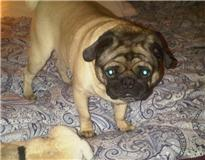

Memorialize Your Pet
Charlie
Charlie had such a kind and gentle spirit. He was
rescued after being put out of a car on a busy
highway in Phenix City. He was so skinny but
immediately showed his gratitude for finding a
Forever Family. He turned out to be a beautiful
stocky boy who loved to roll in the grass!! He made
a lot of noise when people came to the house but
hardly had a tooth in his head! He did what a good
German Shepherd does and that is guard his family
and stay close by their side. He helped to “raise”
several other members of our family but at 15 years
of age his sweet heart just gave out. He loved his
family and his passing has left a void in our hearts
and we will miss him terribly.
posted 04/24/15
______________________________________________________________
Lucky
Our chubba cat “Lucky” died early July 18th
asleep on his cat bed.
You were a big part of our family, always ready with
a purr, a rub against the leg, a meow to be stroked
in our lap, a run to the kitchen whenever he heard
the lunch meat package or a tuna can open, the
enforcer that kept the dogs in check...You gave us
ten good years of smiles and comfort. Even though we
know you are no longer suffering, we selfishly wish
we still had you with us. We tried very hard to keep
you going, but alas it was your time to go. Have fun
chasing bugs, and rolling in the sunlight over that
rainbow bridge my beautiful boy...
Grieving parents of the most awesome fur baby anyone
could ask for,
Jason and Catrina Valadez
posted 07/20/13
______________________________________________________________
Mischa
Dear Mischa,
We saw you for adoption on Georgia English Bulldog
Rescue and it was love at the first time we saw your
picture. December was our best day, because we could
welcome in our family with your new 4 legged friend
Jonatan. We enjoyed every minute...no...every second
with you. You are the sweetest ever. A view month
later, we realized, that you are not feeling good.
we had to bring you to auburn small animal clinic.
They diagnozed cancer. Our world broke down . But we
and the Rescue , never gave up on you. After the
surgery and chemo therapy, we thought, we will have
more time with you. July 6, you had breathing
problems and had a stroke with both parts in your
brain damaged. You couldn't walk, eat and drink
nomore. It was a hard decision to let you go.
But love means also letting go in the right moment.
Over the rainbow bridge , where you are now, you
will have no more pain. You will be loved and
touched. We miss you sweetheart. It was a blessing,
having you in our live. Now you are gone but never
forgotten.
R.I.P. Our sweet girl Misha.We will never
forget you.
July,11.2012
A 'SPECIAL PLACE' for our loved Misha.R.I.P.
You have a special place Dear Lord
that I know you'll always keep
A special place reserved for dogs
when they quietly fall asleep
... With large and airy kennels
and a yard for hiding bones
With maybe a little babbling creek
that chatters over stones.
With wide green fields and flowers
for those who never knew
about running freely under
Your sky of perfect blue.
Lord,I know You keep this Special Place
And so to you I Pray,
For one Special English Bulldog named Misha
Who quietly died today
She was full of strength & love
and so very, very wise.
The puppy look she once had
Had long since left her eyes.
She is dearly missed my Lord
By a very good friend of mine.
She went to join her ancestors
To Your land that is Devine
So, speak to Misha softly please
And give her a warm hello.
She's a Special gift to you Dear Lord
From Susanne, Anthony, De'San, Jonatan and Desteny,
who loved her so.
posted 07/12/12
______________________________________________________________
.jpg) Tyson
"T-Bone"
Tyson
"T-Bone"
My little T boy was suddenly taken from us on
March 28, 2012. He was 12 years old, but had the
personality and spirit of of a 5 year old. He was the
kindest soul I ever knew--even a bit of a pushover!
I frequently had to scare others away from his food so
he could actually eat it--otherwise, he would stand
there and watch his food disappear. He loved catching
birds and mice and leaving us "surprises" on our
doorstep. He had many pals around the neighborhood and
was always willing to accept a meal if someone happened
to offer! He was very good at pretending to be starving
and neglected just to get a snack!
I have had Tyson since he was a 6 wk old kitten and we
have been through several new cities and homes together.
He always showered me with unconditional love and
affection and I cannot imagine not seeing his adorable
face everyday. I find myself looking out on the deck
waiting for him to begin pawing at the door and am
repeatedly saddened when it doesn't happen. This is the
toughest loss I have experienced thus far in my life. I
can't believe he is gone.
All I can hope is that Tyson is somewhere better making
new friends and infecting others with his kind heart and
soul. I will never forget you, T, rest in peace and I
love you always.
posted 03/30/12
______________________________________________________________
Nikko
October 18, 1998 – February 21, 2012
When I visited the breeder to see her new puppies, I
never had any intention of getting one. But in the
middle of the melee, you chose me. You were this
sweet little ball of fur and you absolutely captured my
heart that day. There was something about you that, to
this day, I can’t explain, and I knew that you were
meant to be mine. I believe you shared every ounce of
yourself with our family, every single day. You
were always there when I needed to hold you on my lap
and snuggle; there were countless times that I needed to
smile and you would do something zany and crazy to make
me laugh. Even in your last days, you still mustered
the strength to give a kiss or two. Despite the moves
and the changes in our life, you were the constant
unconditional love in my life. I am lost without
you right now, my heart is broken, and I miss you more
than words could ever say. I will remember you always
and even now, despite how much it hurts to say goodbye
to you, I smile when I think of you. My life has
been changed because you were in it and while I can’t
fill the void that you have left in my heart, I know
that I am better for having had you in my life.
You were my best friend for over 13 years and I thank
you, from the bottom of my heart, for everything that
you were to me and our family. We will miss you.
Tell “Z” we said hi, and we’ll see you again someday.
I love you and I miss you so very, very much.
xoxoxoxo
posted 02/22/12
______________________________________________________________
Lucky
Lucky
passed on 1/10/12 at AL Auburn University from a brain
tumor. She was a major part of my life, my best friend
and constant companion although we only had 3 wonderful
years together. I saved her life after she got hit by a
car and left to die. She was forever grateful but not as
much as I was for the unconditional love she has shown
me over the years. I miss her terribly, my heart is
heavy and lonely at the moment, my house feels empty
without her…but it gives me comfort that she doesn’t
have pain anymore and has crossed that Rainbow Bridge
where I will meet her again one day. My sister actually
just had sent me that poem from Germany to comfort me,
a very reassuring poem. My heart is with everyone who
has lost such a beloved friend. Animals truly are pure
love!!!
-Christiane
Posted 1/16/12
______________________________________________________________
Sheeba - "Sheebanator"
10/1/1997 - 11/19/2011
My husband met Sheeba at a shelter in Sacramento, CA
while he was volunteering there to work through grief
from the loss of his previous dog. Sheeba's attentive
eyes, intense play, and gentle nature created a
connection that healed his heart and started a whole new
companionship. He quickly changed her name from "Fatso"
to "Sheeba". Her "always on the alert" nature and
fearlessness in any situation earned her the nickname
"Sheebanator. I met Sheeba seven years ago when I met
my husband, and she stole my heart before he did but was
happy to share it with her dad. Twelve years, a
marriage, a cross country relocation, and so many
special moments later, Sheeba suddenly went from her
playful, attentive, alert self to a panting, confused,
dazed dog that seemed like a just shell of our Sheeba. A
day later, we learned that she had a glioma (inoperable
tumor) in her forebrain that was responsible for her
symptoms. A dose of medication to bring down any
swelling would tell us if we could buy any more time
with her, and it did not work. Two days later, realizing
that the 'real' Sheeba was mostly gone already, and
learning that her life would only get worse with
seizures, pain, and more confusion, we made the
heartbreaking decision to say our goodbyes to her before
she suffered further.
Nothing can fill the empty space at our feet, on our
walks, on our porch, in the yard, in the car, at the
door when we leave and come home...and so many other
places. There is no escaping the void left behind
because if we were home, Sheeba was by our side. Such a
complete and unconditional companionship was taken from
us in such a short time, so unexpectedly. Aside from
some arthritis, she was a healthy, active, playful dog.
We are struggling with the reality of it weeks later,
still expecting her sweet face to greet us each time we
wake up or return home, and feeling like - surely - she
should be waking up from her nap any time now.
They say that loves ones are never truly lost as long as
they live on in our memories. Well, Sheeba, our
incredible Sheebanator...that means you are by our side
as long as we live. You're here with every crackle of a
package you thought would be for you, every shake of the
keys you hoped meant a car ride, every game day you
'suited up for' with us, every grocery trip that
included a treat for you, every snowfall that you would
so happily 'romp around' in, every barbeque you had to
taste test, every neighborhood bark that you would
answer, every glance at our 'tug of war' spots around
the house, every Halloween that you would have spent
greeting the visitors that came 'just for you', every
sunny day that lights your favorite corner of the porch,
every glass of wine that you - the eternal California
doggie - would need one tasting of. We can't reach down
and pet you, but we can feel you here in all of the
sweet memories we're holding so dear. We miss you more
than words can say, Sheebanator, and we'll never stop
loving you.
Love,
"Mom & Dad"
Posted 12/10/11
______________________________________________________________
Sir King Titus
March 7, 2003 - June 26, 2011

8 years ago you came into our life...tail wagging, ears flopping
and balance just a little off. Your liter name was Frank, but your dad and I
weren't having that. So with names in mind we decided that once we saw you
it would decide what you would be called. Once we held you in our arms with
a tight and warm embrace the kisses you gave were amazing and ooooh that
lovely puppy breath was such a sweet aroma to our nose. As soon as we saw
you run we knew that Titus would be your name, a name in the bible which
means "giant and strength" a sure fit for who you would become. A giant you
would not be in sight, but who could tell you any different, and strength
was right on because that is exactly what you provided through the good, bad
and trivial. So into the AKC we submitted your full name so it could be
recorded on your family tree, "Sir King Titus" is what it’s going to be. We
watched you grow into your body, and become a protector of your house; you
melted the hearts of all you met and oh how could we forget that domineering
bark. Tonight you were called on to a better place, your heavenly life and
the earthly life you knew here is gone. Although you are physically
gone, in our hearts you will always and forever live on. Titus I thank you
for giving us 8 of the best years of our lives, you were the best first
child any parents could ask for and you will be dearly missed. May you
rest in peace and I know you were greeted at heaven’s doggy door with a “Job
well done”.
Love you always,
Mommy and daddy
HEAVEN'S DOGGY-DOOR
My best friend closed his eyes last night,
As his head was in my hand.
The Doctors said he was in pain,
And it was hard for him to stand.
The thoughts that scurried through my head,
As I cradled him in my arms.
Were of his younger, puppy years,
And OH...his many charms.
Today, there was no gentle nudge
With an intense "I love you gaze",
Only a heart that’s filled with tears
Remembering our joy filled days.
But an Angel just appeared to me,
And he said, "You should cry no more,
GOD also loves our canine friends,
HE's installed a 'doggy-door"!
~ Jan Cooper
Posted 07/01/11
______________________________________________________________
 Harley
was a big dog with a big heart and loads of personality. When I took my
son, Danny, to the pound to find a dog, Harley found him. Harley ran into
the visiting area where Danny sat, jumped into his lap, breaking the chair
and sending them both crashing to the ground, where Harley stood on top of
him licking his face. It was love at first sight! Over the past 9 years,
Harley showed us many sides to his character: he was fiercely protective,
fun-loving and silly, sweet and gentle. He smiled to his last breath, on
June 4, 2011. We miss our gentle giant, and will never forget what a
wonderful, loving part of our family he has been.
Harley
was a big dog with a big heart and loads of personality. When I took my
son, Danny, to the pound to find a dog, Harley found him. Harley ran into
the visiting area where Danny sat, jumped into his lap, breaking the chair
and sending them both crashing to the ground, where Harley stood on top of
him licking his face. It was love at first sight! Over the past 9 years,
Harley showed us many sides to his character: he was fiercely protective,
fun-loving and silly, sweet and gentle. He smiled to his last breath, on
June 4, 2011. We miss our gentle giant, and will never forget what a
wonderful, loving part of our family he has been.
We'll miss you until we meet again, Handsome Harley.
Kristine and Daniel Lindemulder
Posted June 17, 2011
______________________________________________________________

Posted May 12, 2011
______________________________________________________________
"Socket.....an
unusual name for a pet but very fitting for this beautiful fellow. As a four
week old kitten, he found his way across a very busy road, into our yard and
up into the warm engine of a Ford Club Van. We could hear the tiny "Meows"
and finally located him! It required us literally taking the engine apart to
get to him and at long last he was free.......but only by the grace of a
socket wrench!! The name was perfect! For 14 short years he has been a loyal
friend and always welcomed the many strays that we have adopted into our
family. He had such a kind and gentle spirit like no other pet we have ever
had. Today, September 9, 2010, he passed away in my arms. He loved his
family and his passing has left a void in our hearts and we will miss him
terribly.
God Bless you, Socket! - R.S.
Posted September 10, 2010
______________________________________________________________
"This is my Chocolate Lab - Cocoa. She was almost fourteen and she passed
away on Monday, July 19. My heart is broken. She was my best friend and
companion for fourteen years. There is nothing more special than the
unconditional love of a pet. I miss her terribly. I have so many fond
memories of her...hopefully that will help me to get through the grieving
process." - C.S.
Posted July 28, 2010
______________________________________________________________